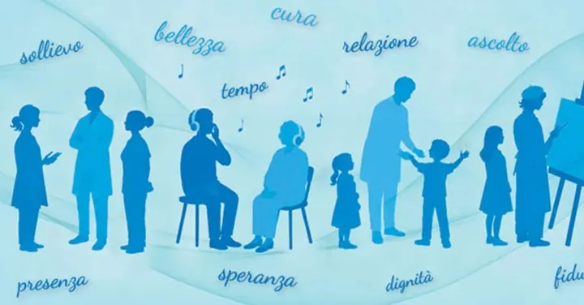

da mer 21 ott a dom 25 ott
Poeti Sociali
Dal 21 al 25 ottobre 2026 Verona ospita la terza edizione di " Poeti Sociali ", l’appuntamento annuale con la rassegna che mette in dialogo persone, linguaggi e luoghi diversi per cercare insieme pace e giustizia.
 Indicazioni
Indicazioni
- Costi e prenotazioni
- Costo non indicato · Prenotazione non indicata
- Programma
- Programma da verificare. Apri la fonte ufficiale per orari e possibili aggiornamenti.
- In caso di maltempo
- Nessuna indicazione specifica pubblicata.
- Note
- Acquisito automaticamente dalla fonte.
L’EVENTO
Descrizione completa
Dal 21 al 25 ottobre 2026 Verona ospita la terza edizione di " Poeti Sociali ", l’appuntamento annuale con la rassegna che mette in dialogo persone, linguaggi e luoghi diversi per cercare insieme pace e giustizia.
Ad avviare la rassegna vera e propria, mercoledì 21 ottobre al Palazzo Scaligero, sarà una preghiera interreligiosa con i rappresentanti delle istituzioni e delle religioni presenti nel territorio veronese; alle 20.45 nella chiesa di San Bernardino, il dialogo tra il giornalista Ezio Mauro e il sociologo Mauro Magatti sul tema “Salvare l’umano al tempo dell’Ai. La provocazione di papa Leone”.
Tra gli ospiti di questa edizione si annoverano anche Shahrzad Houshmand, teologa iraniana; l’ex giudice della Corte costituzionale e ministra Marta Cartabia in dialogo con Claudia Mazzucato su diritto, processi culturali e giustizia riparativa; padre Renato Kizito Sesana; don Luigi Verdi e il monaco Luciano Manicardi per le meditazioni mattutine nella Basilica di San Zeno; il card. Angelo Bagnasco; Monika Bulaj con il suo viaggio-spettacolo; don Paolo Alliata con la lettura e commento de Il pranzo di Babette .
Tre gli eventi a pagamento, ciascuno a 10 euro, che saranno ospitati in Gran Guardia: giovedì 22 ottobre alle 20.30 Giacomo Poretti e Daniela Cristofori con lo spettacolo Condominio Mon Amour; domenica 25 ottobre Ippolita Baldini con Una ballata per Chiara (alle 15) e Alessandro Bergonzoni, che concluderà la rassegna con lo speciale monologo Torniamo umani? Diventiamo sovrumani (alle 19). Per tutta la durata della rassegna, nel loggiato della Gran Guardia verranno installate due mostre: “Chiamati due volte. I martiri d'Algeria” e “...Ma sono vivo. Voci dall’Ucraina”, entrambe a ingresso libero.
Un invito rivolto a tutti, a ritrovare il coraggio di misurarci nella cura dell’umano e a costruire ‘itinerari di pace’ alla ricerca di luoghi di incontro e di dialogo, al fine di tessere legami duraturi”.
IL PROGRAMMA
Programma e orari
Appuntamenti raccolti dalle fonti elencate. Dove manca un orario, non è ancora disponibile in questa scheda.
Programma pubblicato
- 2026-10-21 — 2026-10-21 · 18:00:00
- 2026-10-22 — 2026-10-24 · 07:00:00
- 2026-10-25 — 2026-10-25 · 08:30:00
INFORMAZIONI UTILI
Prima di partire
- Controllare la fonte prima di partire.
ORGANIZZAZIONE